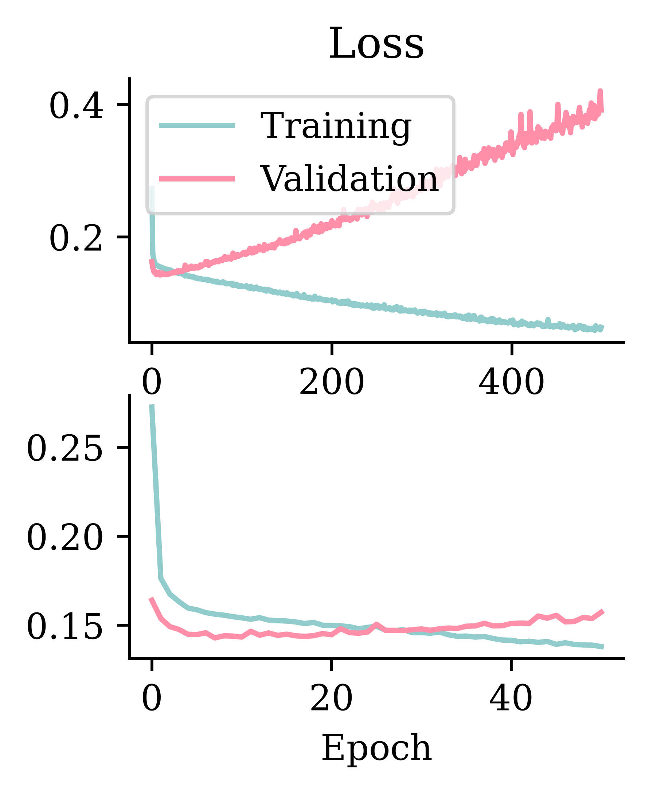
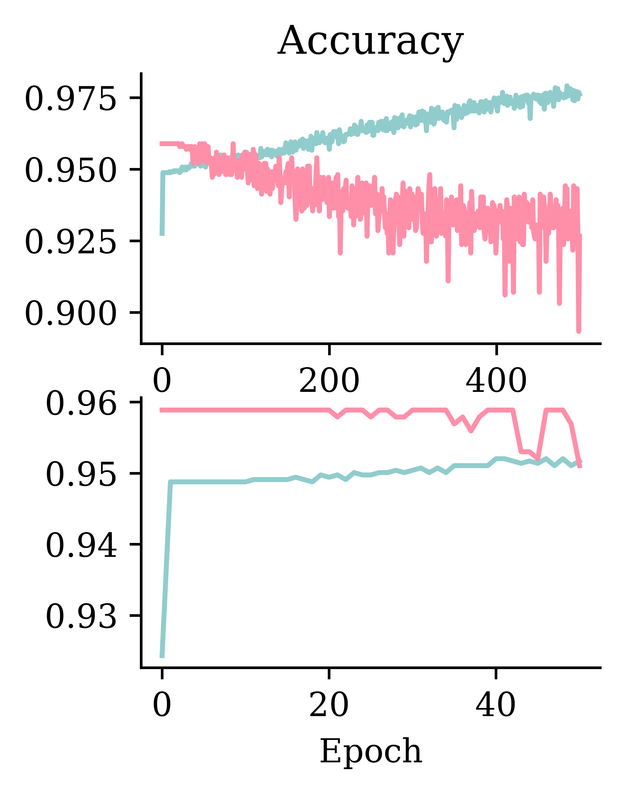
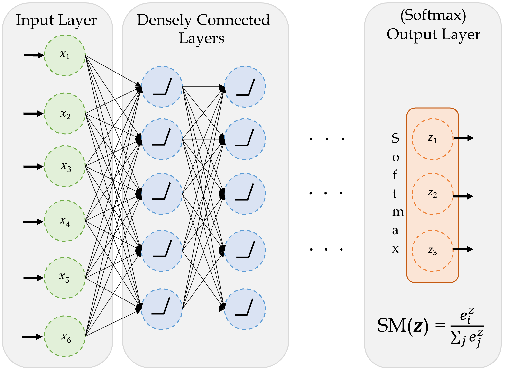
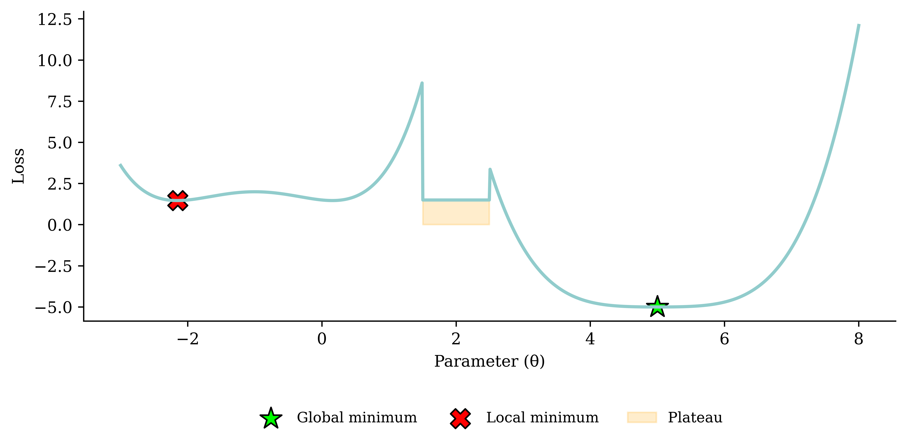
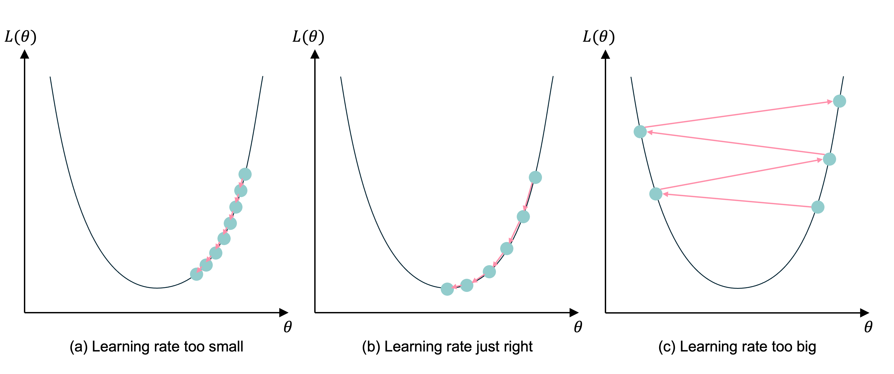
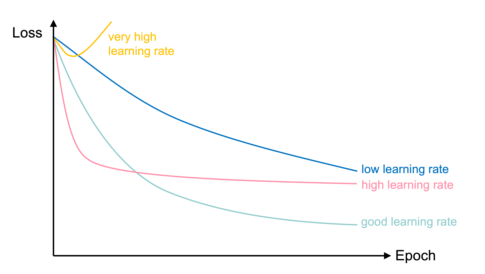

import random
from pathlib import Path
import matplotlib.pyplot as plt
import numpy as np
import pandas as pd
import seaborn as sns
from keras.models import Sequential
from keras.layers import Dense, Input
from keras.callbacks import EarlyStopping
from sklearn.datasets import load_iris
from sklearn.model_selection import train_test_split
from sklearn.preprocessing import OneHotEncoder, StandardScaler
from sklearn.compose import make_column_transformer
from sklearn.impute import SimpleImputer
from sklearn.metrics import confusion_matrix, RocCurveDisplay, PrecisionRecallDisplay
from sklearn import set_config
set_config(transform_output="pandas")Classification & Optimisation
ACTL3143 & ACTL5111 Deep Learning for Actuaries
Patrick Laub
Overview
In these slides, we’ll start by giving some demonstrations of training classification models that: 1) predict a binary outcome, then 2) predict a categorical outcome with > 2 options or levels.
Next, we’ll step into the maths of how these classification models make predictions, then go look at the high-level ideas of how to “train” them, then finally look at the maths of this training process.
Imports needed for these demos
Binary Classification
Lecture Outline
Binary Classification
Multiclass Classification
Dense Layers in Matrices
Optimisation
Loss and Derivatives
Stroke Prediction Data description
id: unique identifiergender: “Male”, “Female” or “Other”age: age of the patienthypertension: 0 or 1 if the patient has hypertensionheart_disease: 0 or 1 if the patient has any heart diseaseever_married: “No” or “Yes”work_type: “children”, “Govt_jov”, “Never_worked”, “Private” or “Self-employed”
Residence_type: “Rural” or “Urban”avg_glucose_level: average glucose level in bloodbmi: body mass indexsmoking_status: “formerly smoked”, “never smoked”, “smokes” or “Unknown”stroke: 0 or 1 if the patient had a stroke
Source: Kaggle, Stroke Prediction Dataset.
Load up the (pre-)preprocessed data
PROCESSED_DATA_DIR = Path("stroke/processed")
X_train = pd.read_csv(PROCESSED_DATA_DIR / "x_train.csv")
X_val= pd.read_csv(PROCESSED_DATA_DIR / "x_val.csv")
X_test = pd.read_csv(PROCESSED_DATA_DIR / "x_test.csv")
y_train = pd.read_csv(PROCESSED_DATA_DIR / "y_train.csv")
y_val = pd.read_csv(PROCESSED_DATA_DIR / "y_val.csv")
y_test = pd.read_csv(PROCESSED_DATA_DIR / "y_test.csv")
X_train| gender_Female | gender_Male | ever_married_No | ever_married_Yes | Residence_type_Rural | Residence_type_Urban | work_type_Govt_job | work_type_Never_worked | work_type_Private | work_type_Self-employed | work_type_children | smoking_status_Unknown | smoking_status_formerly smoked | smoking_status_never smoked | smoking_status_smokes | hypertension | heart_disease | age | avg_glucose_level | bmi | |
|---|---|---|---|---|---|---|---|---|---|---|---|---|---|---|---|---|---|---|---|---|
| 0 | 0.0 | 1.0 | 0.0 | 1.0 | 1.0 | 0.0 | 0.0 | 0.0 | 1.0 | 0.0 | 0.0 | 0.0 | 0.0 | 1.0 | 0.0 | 0 | 0 | 0.003896 | -0.628661 | 0.005109 |
| 1 | 0.0 | 1.0 | 1.0 | 0.0 | 1.0 | 0.0 | 0.0 | 0.0 | 0.0 | 0.0 | 1.0 | 1.0 | 0.0 | 0.0 | 0.0 | 0 | 0 | -1.634096 | -0.257346 | -1.509505 |
| 2 | 0.0 | 1.0 | 1.0 | 0.0 | 1.0 | 0.0 | 0.0 | 0.0 | 1.0 | 0.0 | 0.0 | 0.0 | 0.0 | 1.0 | 0.0 | 0 | 0 | -0.483075 | -0.754323 | -0.732780 |
| ... | ... | ... | ... | ... | ... | ... | ... | ... | ... | ... | ... | ... | ... | ... | ... | ... | ... | ... | ... | ... |
| 3063 | 1.0 | 0.0 | 0.0 | 1.0 | 1.0 | 0.0 | 1.0 | 0.0 | 0.0 | 0.0 | 0.0 | 0.0 | 0.0 | 1.0 | 0.0 | 1 | 0 | 0.667946 | -1.028773 | 0.561761 |
| 3064 | 1.0 | 0.0 | 0.0 | 1.0 | 1.0 | 0.0 | 0.0 | 0.0 | 1.0 | 0.0 | 0.0 | 0.0 | 1.0 | 0.0 | 0.0 | 0 | 0 | -0.084644 | -0.366428 | 0.548816 |
| 3065 | 0.0 | 1.0 | 1.0 | 0.0 | 0.0 | 1.0 | 0.0 | 0.0 | 1.0 | 0.0 | 0.0 | 1.0 | 0.0 | 0.0 | 0.0 | 0 | 0 | -1.147126 | -0.765668 | -0.422090 |
3066 rows × 20 columns
Target variable
Setup a binary classification model
Model: "sequential"
┏━━━━━━━━━━━━━━━━━━━━━━━━━━━━━━━━━┳━━━━━━━━━━━━━━━━━━━━━━━━┳━━━━━━━━━━━━━━━┓ ┃ Layer (type) ┃ Output Shape ┃ Param # ┃ ┡━━━━━━━━━━━━━━━━━━━━━━━━━━━━━━━━━╇━━━━━━━━━━━━━━━━━━━━━━━━╇━━━━━━━━━━━━━━━┩ │ dense (Dense) │ (None, 32) │ 672 │ ├─────────────────────────────────┼────────────────────────┼───────────────┤ │ dense_1 (Dense) │ (None, 16) │ 528 │ ├─────────────────────────────────┼────────────────────────┼───────────────┤ │ dense_2 (Dense) │ (None, 1) │ 17 │ └─────────────────────────────────┴────────────────────────┴───────────────┘
Total params: 1,217 (4.75 KB)
Trainable params: 1,217 (4.75 KB)
Non-trainable params: 0 (0.00 B)
Fit the model
Epoch 1/5
96/96 - 0s - 1ms/step - loss: 0.2734
Epoch 2/5
96/96 - 0s - 716us/step - loss: 0.1753
Epoch 3/5
96/96 - 0s - 715us/step - loss: 0.1665
Epoch 4/5
96/96 - 0s - 717us/step - loss: 0.1619
Epoch 5/5
96/96 - 0s - 737us/step - loss: 0.1595<keras.src.callbacks.history.History at 0x123577cb0>Track accuracy as the model trains
Epoch 1/5
96/96 - 0s - 797us/step - accuracy: 0.9204 - loss: 0.2711
Epoch 2/5
96/96 - 0s - 776us/step - accuracy: 0.9488 - loss: 0.1766
Epoch 3/5
96/96 - 0s - 782us/step - accuracy: 0.9488 - loss: 0.1667
Epoch 4/5
96/96 - 0s - 783us/step - accuracy: 0.9488 - loss: 0.1623
Epoch 5/5
96/96 - 0s - 762us/step - accuracy: 0.9488 - loss: 0.1595<keras.src.callbacks.history.History at 0x1237bce10>Run a long fit
Add early stopping
model = create_model()
model.compile("adam", "binary_crossentropy", metrics=["accuracy"])
es = EarlyStopping(restore_best_weights=True, patience=50, monitor="val_accuracy")
%time hist_es = model.fit(X_train, y_train, epochs=500, validation_data=(X_val, y_val), callbacks=[es], verbose=False)
print(f"Stopped after {len(hist_es.history['loss'])} epochs.")CPU times: user 4.56 s, sys: 394 ms, total: 4.96 s
Wall time: 4.68 s
Stopped after 51 epochs.Fitting metrics
Code
matplotlib.pyplot.rcParams["figure.figsize"] = (2.5, 2.95)
plt.subplot(2, 1, 1)
plt.plot(hist.history["loss"])
plt.plot(hist.history["val_loss"])
plt.title("Loss")
plt.legend(["Training", "Validation"])
plt.subplot(2, 1, 2)
plt.plot(hist_es.history["loss"])
plt.plot(hist_es.history["val_loss"])
plt.xlabel("Epoch");
Code

Add metrics, compile, and fit
model = create_model()
pr_auc = keras.metrics.AUC(curve="PR", name="pr_auc")
model.compile(optimizer="adam", loss="binary_crossentropy",
metrics=[pr_auc, "accuracy", "auc"])
es = EarlyStopping(patience=50, restore_best_weights=True,
monitor="val_pr_auc", verbose=1)
model.fit(X_train, y_train, callbacks=[es], epochs=1_000, verbose=0,
validation_data=(X_val, y_val));Epoch 81: early stopping
Restoring model weights from the end of the best epoch: 31.Why use cross-entropy loss?
Overweight the minority class
model = create_model()
pr_auc = keras.metrics.AUC(curve="PR", name="pr_auc")
model.compile(optimizer="adam", loss="binary_crossentropy",
metrics=[pr_auc, "accuracy", "auc"])
es = EarlyStopping(patience=50, restore_best_weights=True,
monitor="val_pr_auc", verbose=1)
model.fit(X_train, y_train.to_numpy(), callbacks=[es], epochs=1_000, verbose=0,
validation_data=(X_val, y_val), class_weight={0: 1, 1: 10});Epoch 64: early stopping
Restoring model weights from the end of the best epoch: 14.Classification Metrics
Multiclass Classification
Lecture Outline
Binary Classification
Multiclass Classification
Dense Layers in Matrices
Optimisation
Loss and Derivatives
Iris dataset
| SepalLength | SepalWidth | PetalLength | PetalWidth | |
|---|---|---|---|---|
| 0 | 5.1 | 3.5 | 1.4 | 0.2 |
| 1 | 4.9 | 3.0 | 1.4 | 0.2 |
| ... | ... | ... | ... | ... |
| 148 | 6.2 | 3.4 | 5.4 | 2.3 |
| 149 | 5.9 | 3.0 | 5.1 | 1.8 |
150 rows × 4 columns
Target variable
Split the data into train and test
| SepalLength | SepalWidth | PetalLength | PetalWidth | |
|---|---|---|---|---|
| 53 | 5.5 | 2.3 | 4.0 | 1.3 |
| 58 | 6.6 | 2.9 | 4.6 | 1.3 |
| 95 | 5.7 | 3.0 | 4.2 | 1.2 |
| ... | ... | ... | ... | ... |
| 145 | 6.7 | 3.0 | 5.2 | 2.3 |
| 87 | 6.3 | 2.3 | 4.4 | 1.3 |
| 131 | 7.9 | 3.8 | 6.4 | 2.0 |
112 rows × 4 columns
A basic classifier network

A basic network for classifying into three categories.
Source: Marcus Lautier (2022).
Create a classifier model
Number of features: 4
Number of categories: 3Make a function to return a Keras model:
Fit the model
Epoch 1/5
4/4 - 0s - 1ms/step - loss: 1.3920
Epoch 2/5
4/4 - 0s - 947us/step - loss: 1.2912
Epoch 3/5
4/4 - 0s - 965us/step - loss: 1.2196
Epoch 4/5
4/4 - 0s - 985us/step - loss: 1.1576
Epoch 5/5
4/4 - 0s - 886us/step - loss: 1.1084Track accuracy as the model trains
Epoch 1/5
4/4 - 0s - 1ms/step - accuracy: 0.2857 - loss: 1.3930
Epoch 2/5
4/4 - 0s - 970us/step - accuracy: 0.2857 - loss: 1.2970
Epoch 3/5
4/4 - 0s - 978us/step - accuracy: 0.2857 - loss: 1.2203
Epoch 4/5
4/4 - 0s - 986us/step - accuracy: 0.2946 - loss: 1.1596
Epoch 5/5
4/4 - 0s - 935us/step - accuracy: 0.3393 - loss: 1.1067Run a long fit
CPU times: user 1.43 s, sys: 300 ms, total: 1.73 s
Wall time: 1.55 sEvaluation now returns both loss and accuracy.
Add early stopping
model_es = build_model()
model_es.compile("adam", "sparse_categorical_crossentropy", \
metrics=["accuracy"])
es = EarlyStopping(restore_best_weights=True, patience=50,
monitor="val_accuracy")
%time hist_es = model_es.fit(X_train, y_train, epochs=500, \
validation_split=0.25, callbacks=[es], verbose=False);
print(f"Stopped after {len(hist_es.history['loss'])} epochs.")CPU times: user 205 ms, sys: 44 ms, total: 249 ms
Wall time: 222 ms
Stopped after 70 epochs.Evaluation on test set:
Fitting metrics
Code
matplotlib.pyplot.rcParams["figure.figsize"] = (2.5, 2.95)
plt.subplot(2, 1, 1)
plt.plot(hist.history["loss"])
plt.plot(hist.history["val_loss"])
plt.title("Loss")
plt.legend(["Training", "Validation"])
plt.subplot(2, 1, 2)
plt.plot(hist_es.history["loss"])
plt.plot(hist_es.history["val_loss"])
plt.xlabel("Epoch");
Code

What is the softmax activation?
It creates a “probability” vector: \text{Softmax}(\boldsymbol{x})_i = \frac{\mathrm{e}^{x_i}}{\sum_j \mathrm{e}^{x_j}} \,.
In NumPy:
In Keras:
Prediction using classifiers
array([[2.02e-06, 7.64e-02, 9.24e-01],
[1.86e-07, 1.62e-03, 9.98e-01],
[1.44e-02, 9.76e-01, 1.00e-02],
[2.80e-03, 8.50e-01, 1.48e-01]], dtype=float32)Summary: Classification models in Keras
If the number of classes is c, then:
| Target | Output Layer | Loss Function |
|---|---|---|
| Binary (c=2) |
1 neuron with sigmoid activation |
Binary Cross-Entropy |
| Multi-class (c > 2) |
c neurons with softmax activation |
Categorical Cross-Entropy |
Summary: Optionally output logits
If the number of classes is c, then:
| Target | Output Layer | Loss Function |
|---|---|---|
| Binary (c=2) |
1 neuron with linear activation |
Binary Cross-Entropy (from_logits=True) |
| Multi-class (c > 2) |
c neurons with linear activation |
Categorical Cross-Entropy (from_logits=True) |
Summary: Code examples
Binary
Binary (logits)
Both BinaryCrossentropy and SparseCategoricalCrossentropy live in keras.losses.
Dense Layers in Matrices
Lecture Outline
Binary Classification
Multiclass Classification
Dense Layers in Matrices
Optimisation
Loss and Derivatives
Logistic regression
Observations: \mathbf{x}_{i,\bullet} \in \mathbb{R}^{2}.
Target: y_i \in \{0, 1\}.
Predict: \hat{y}_i = \mathbb{P}(Y_i = 1).
The model
For \mathbf{x}_{i,\bullet} = (x_{i,1}, x_{i,2}): z_i = x_{i,1} w_1 + x_{i,2} w_2 + b
\hat{y}_i = \sigma(z_i) = \frac{1}{1 + \mathrm{e}^{-z_i}} .

Multiple observations
| x_1 | x_2 | y | |
|---|---|---|---|
| 0 | 1 | 2 | 0 |
| 1 | 3 | 4 | 1 |
| 2 | 5 | 6 | 1 |
Let w_1 = 1, w_2 = 2 and b = -10.
Matrix notation
Have \mathbf{X} \in \mathbb{R}^{3 \times 2}.
\mathbf{z} = \mathbf{X} \mathbf{w} + b , \quad \mathbf{a} = \sigma(\mathbf{z})
Using a softmax output
Observations: \mathbf{x}_{i,\bullet} \in \mathbb{R}^{2}. Predict: \hat{y}_{i,j} = \mathbb{P}(Y_i = j).
Target: \mathbf{y}_{i,\bullet} \in \{(1, 0), (0, 1)\}.
The model: For \mathbf{x}_{i,\bullet} = (x_{i,1}, x_{i,2}) \begin{aligned} z_{i,1} &= x_{i,1} w_{1,1} + x_{i,2} w_{2,1} + b_1 , \\ z_{i,2} &= x_{i,1} w_{1,2} + x_{i,2} w_{2,2} + b_2 . \end{aligned}
\begin{aligned} \hat{y}_{i,1} &= \text{Softmax}_1(\mathbf{z}_i) = \frac{\mathrm{e}^{z_{i,1}}}{\mathrm{e}^{z_{i,1}} + \mathrm{e}^{z_{i,2}}} , \\ \hat{y}_{i,2} &= \text{Softmax}_2(\mathbf{z}_i) = \frac{\mathrm{e}^{z_{i,2}}}{\mathrm{e}^{z_{i,1}} + \mathrm{e}^{z_{i,2}}} . \end{aligned}
Multiple observations
Choose:
w_{1,1} = 1, w_{2,1} = 2,
w_{1,2} = 3, w_{2,2} = 4, and
b_1 = -10, b_2 = -20.
Matrix notation
\mathbf{Z} = \mathbf{X} \mathbf{W} + \mathbf{b} , \quad \mathbf{A} = \text{Softmax}(\mathbf{Z}) .
Optimisation
Lecture Outline
Binary Classification
Multiclass Classification
Dense Layers in Matrices
Optimisation
Loss and Derivatives
Gradient-based learning
In-class demo
Gradient descent pitfalls

Go over all the training data
Called batch gradient descent.
Pick a random training example
Called stochastic gradient descent.
Take a group of training examples
Called mini-batch gradient descent.
Mini-batch gradient descent
Why?
- Because we have to (data is too big to shove it all in a single batch)
- Because it is faster (lots of quick noisy steps takes longer than a few slow super accurate steps)
- The noise helps us jump out of local minima

Noisy gradient means we might jump out of a local minimum.
Learning rates

Gradient descent with different learning rates
Source: Melissa Renard (2025), adapted from Jeremy Jordan (2018), Setting the learning rate of your neural network.
Learning rates #2
Source: Matt Henderson (2021), X post
Learning rate schedule

Learning curves for various learning rates
In training the learning rate may be tweaked manually.
Source: Melissa Renard (2025), adapted from Deep Learning for Computer Vision - Stanford Spring 2025
Loss and Derivatives
Lecture Outline
Binary Classification
Multiclass Classification
Dense Layers in Matrices
Optimisation
Loss and Derivatives
Example: linear regression
\hat{y}(x) = w x + b
For some observation \{ x_i, y_i \}, the squared error loss is
\text{Loss}_i = (\hat{y}(x_i) - y_i)^2
For a batch of the first n observations the MSE loss is
\text{Loss}_{1:n} = \frac{1}{n} \sum_{i=1}^n (\hat{y}(x_i) - y_i)^2
Derivatives
Since \hat{y}(x) = w x + b,
\frac{\partial \hat{y}(x)}{\partial w} = x \text{ and } \frac{\partial \hat{y}(x)}{\partial b} = 1 .
As \text{Loss}_i = (\hat{y}(x_i) - y_i)^2, we know \frac{\partial \text{Loss}_i}{\partial \hat{y}(x_i) } = 2 (\hat{y}(x_i) - y_i) .
Chain rule
\frac{\partial \text{Loss}_i}{\partial \hat{y}(x_i) } = 2 (\hat{y}(x_i) - y_i), \,\, \frac{\partial \hat{y}(x)}{\partial w} = x , \, \text{ and } \, \frac{\partial \hat{y}(x)}{\partial b} = 1 .
Putting this together, we have
\frac{\partial \text{Loss}_i}{\partial w} = \frac{\partial \text{Loss}_i}{\partial \hat{y}(x_i) } \times \frac{\partial \hat{y}(x_i)}{\partial w} = 2 (\hat{y}(x_i) - y_i) \, x_i
and \frac{\partial \text{Loss}_i}{\partial b} = \frac{\partial \text{Loss}_i}{\partial \hat{y}(x_i) } \times \frac{\partial \hat{y}(x_i)}{\partial b} = 2 (\hat{y}(x_i) - y_i) .
Applying the chain rule backwards through the network to get every gradient is backpropagation (Rumelhart et al., 1986).
We need non-zero derivatives
This is why can’t use accuracy as the loss function for classification.
Also why we can have the dead ReLU problem.
Stochastic gradient descent (SGD)
Start with \boldsymbol{\theta}_0 = (w, b)^\top = (0, 0)^\top.
Randomly pick i=5, say x_i = 5 and y_i = 5.
\hat{y}(x_i) = 0 \times 5 + 0 = 0 \Rightarrow \text{Loss}_i = (0 - 5)^2 = 25.
The partial derivatives are \begin{aligned} \frac{\partial \text{Loss}_i}{\partial w} &= 2 (\hat{y}(x_i) - y_i) \, x_i = 2 \cdot (0 - 5) \cdot 5 = -50, \text{ and} \\ \frac{\partial \text{Loss}_i}{\partial b} &= 2 (0 - 5) = - 10. \end{aligned} The gradient is \nabla \text{Loss}_i = (-50, -10)^\top.
SGD, first iteration
Start with \boldsymbol{\theta}_0 = (w, b)^\top = (0, 0)^\top.
Randomly pick i=5, say x_i = 5 and y_i = 5.
The gradient is \nabla \text{Loss}_i = (-50, -10)^\top.
Use learning rate \eta = 0.01 to update \begin{aligned} \boldsymbol{\theta}_1 &= \boldsymbol{\theta}_0 - \eta \nabla \text{Loss}_i \\ &= \begin{pmatrix} 0 \\ 0 \end{pmatrix} - 0.01 \begin{pmatrix} -50 \\ -10 \end{pmatrix} \\ &= \begin{pmatrix} 0 \\ 0 \end{pmatrix} + \begin{pmatrix} 0.5 \\ 0.1 \end{pmatrix} = \begin{pmatrix} 0.5 \\ 0.1 \end{pmatrix}. \end{aligned}
SGD, second iteration
Start with \boldsymbol{\theta}_1 = (w, b)^\top = (0.5, 0.1)^\top.
Randomly pick i=9, say x_i = 9 and y_i = 17.
The gradient is \nabla \text{Loss}_i = (-223.2, -24.8)^\top.
Use learning rate \eta = 0.01 to update \begin{aligned} \boldsymbol{\theta}_2 &= \boldsymbol{\theta}_1 - \eta \nabla \text{Loss}_i \\ &= \begin{pmatrix} 0.5 \\ 0.1 \end{pmatrix} - 0.01 \begin{pmatrix} -223.2 \\ -24.8 \end{pmatrix} \\ &= \begin{pmatrix} 0.5 \\ 0.1 \end{pmatrix} + \begin{pmatrix} 2.232 \\ 0.248 \end{pmatrix} = \begin{pmatrix} 2.732 \\ 0.348 \end{pmatrix}. \end{aligned}
Batch gradient descent (BGD)
For the first n observations \text{Loss}_{1:n} = \frac{1}{n} \sum_{i=1}^n \text{Loss}_i so
\begin{aligned} \frac{\partial \text{Loss}_{1:n}}{\partial w} &= \frac{1}{n} \sum_{i=1}^n \frac{\partial \text{Loss}_{i}}{\partial w} = \frac{1}{n} \sum_{i=1}^n \frac{\partial \text{Loss}_{i}}{\hat{y}(x_i)} \frac{\partial \hat{y}(x_i)}{\partial w} \\ &= \frac{1}{n} \sum_{i=1}^n 2 (\hat{y}(x_i) - y_i) \, x_i . \end{aligned}
\begin{aligned} \frac{\partial \text{Loss}_{1:n}}{\partial b} &= \frac{1}{n} \sum_{i=1}^n \frac{\partial \text{Loss}_{i}}{\partial b} = \frac{1}{n} \sum_{i=1}^n \frac{\partial \text{Loss}_{i}}{\hat{y}(x_i)} \frac{\partial \hat{y}(x_i)}{\partial b} \\ &= \frac{1}{n} \sum_{i=1}^n 2 (\hat{y}(x_i) - y_i) . \end{aligned}
BGD, first iteration (\boldsymbol{\theta}_0 = \boldsymbol{0})
| x | y | y_hat | loss | dL/dw | dL/db | |
|---|---|---|---|---|---|---|
| 0 | 1 | 0.99 | 0 | 0.98 | -1.98 | -1.98 |
| 1 | 2 | 3.00 | 0 | 9.02 | -12.02 | -6.01 |
| 2 | 3 | 5.01 | 0 | 25.15 | -30.09 | -10.03 |
So \nabla \text{Loss}_{1:3} is
so with \eta = 0.1 then \boldsymbol{\theta}_1 becomes
BGD, second iteration
| x | y | y_hat | loss | dL/dw | dL/db | |
|---|---|---|---|---|---|---|
| 0 | 1 | 0.99 | 2.07 | 1.17 | 2.16 | 2.16 |
| 1 | 2 | 3.00 | 3.54 | 0.29 | 2.14 | 1.07 |
| 2 | 3 | 5.01 | 5.01 | 0.00 | -0.04 | -0.01 |
So \nabla \text{Loss}_{1:3} is
so with \eta = 0.1 then \boldsymbol{\theta}_2 becomes
Package Versions
Python implementation: CPython
Python version : 3.14.5
IPython version : 9.15.0
keras : 3.15.0
matplotlib: 3.11.0
numpy : 2.5.0
pandas : 3.0.3
seaborn : 0.13.2
scipy : 1.18.0
torch : 2.12.1
Recommended viewing
Some very easy-to-follow explanations of these topics, plus catchy tunes:
Glossary
- accuracy
- classification problem
- confusion matrix
- cross-entropy loss
- metrics
- sigmoid activation function
- softmax activation
- batch gradient descent
- batches, batch size
- global minimum, local minimum
- gradient-based learning, hill-climbing
- learning rate, learning rate schedule
- plateau
- stochastic gradient descent
- mini-batch gradient descent
References
Rumelhart, D. E., Hinton, G. E., & Williams, R. J. (1986). Learning representations by back-propagating errors. Nature, 323(6088), 533–536.